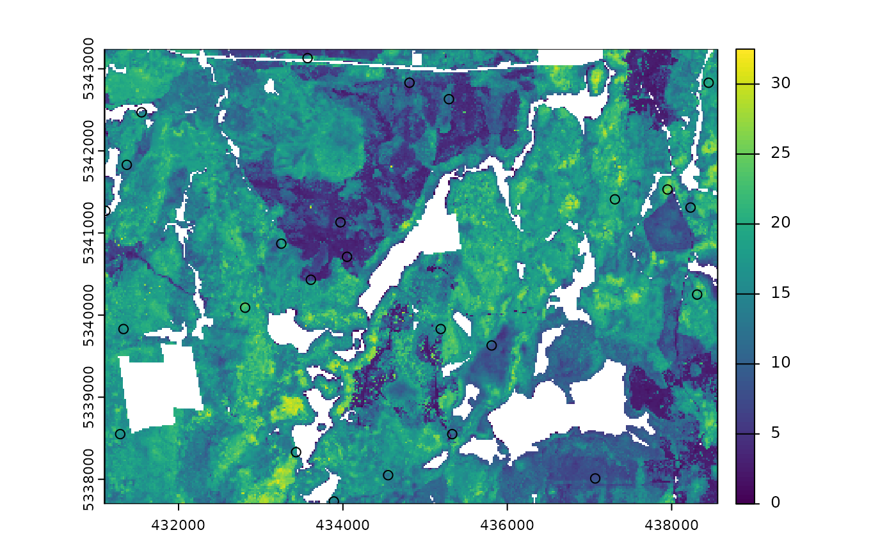

Currently, there are 9 functions associated with the
sample verb in the sgsR package:
| Algorithm | Description | Reference |
|---|---|---|
sample_srs() |
Simple random | |
sample_systematic() |
Systematic | |
sample_strat() |
Stratified | Queinnec, White, & Coops (2021) |
sample_sys_strat() |
Systematic Stratified | |
sample_nc() |
Nearest centroid | Melville & Stone (2016) |
sample_clhs() |
Conditioned Latin hypercube | Minasny & McBratney (2006) |
sample_balanced() |
Balanced sampling | Grafström, A. Lisic, J (2018) |
sample_ahels() |
Adapted hypercube evaluation of a legacy sample | Malone, Minasny, & Brungard (2019) |
sample_existing() |
Sub-sampling an existing sample |
sample_srs
We have demonstrated a simple example of using the
sample_srs() function in vignette("sgsR"). We
will demonstrate additional examples below.
raster
The input required for sample_srs() is a
raster. This means that sraster and
mraster are supported for this function.
#--- perform simple random sampling ---#
sample_srs(
raster = sraster, # input sraster
nSamp = 200, # number of desired sample units
plot = TRUE
) # plot
#> Simple feature collection with 200 features and 0 fields
#> Geometry type: POINT
#> Dimension: XY
#> Bounding box: xmin: 431150 ymin: 5337810 xmax: 438530 ymax: 5343230
#> Projected CRS: UTM Zone 17, Northern Hemisphere
#> First 10 features:
#> geometry
#> 1 POINT (437230 5340310)
#> 2 POINT (434110 5340570)
#> 3 POINT (433790 5342130)
#> 4 POINT (437270 5340250)
#> 5 POINT (434550 5342250)
#> 6 POINT (436230 5339390)
#> 7 POINT (434090 5340850)
#> 8 POINT (433810 5342170)
#> 9 POINT (433990 5340470)
#> 10 POINT (436390 5339730)
sample_srs(
raster = mraster, # input mraster
nSamp = 200, # number of desired sample units
access = access, # define access road network
mindist = 200, # minimum distance sample units must be apart from one another
buff_inner = 50, # inner buffer - no sample units within this distance from road
buff_outer = 200, # outer buffer - no sample units further than this distance from road
plot = TRUE
) # plot
#> Simple feature collection with 200 features and 0 fields
#> Geometry type: POINT
#> Dimension: XY
#> Bounding box: xmin: 431170 ymin: 5337750 xmax: 438550 ymax: 5343230
#> Projected CRS: UTM Zone 17, Northern Hemisphere
#> First 10 features:
#> geometry
#> 1 POINT (432770 5339930)
#> 2 POINT (436130 5342190)
#> 3 POINT (431890 5340490)
#> 4 POINT (437830 5338090)
#> 5 POINT (434330 5339490)
#> 6 POINT (435890 5343090)
#> 7 POINT (438170 5342030)
#> 8 POINT (438270 5339410)
#> 9 POINT (435430 5342430)
#> 10 POINT (436330 5343190)
sample_systematic
The sample_systematic() function applies systematic
sampling across an area with the cellsize parameter
defining the resolution of the tessellation. The tessellation shape can
be modified using the square parameter. Assigning
TRUE (default) to the square parameter results
in a regular grid and assigning FALSE results in a
hexagonal grid.
The location of sample units can also be adjusted using the
locations parameter, where centers takes the
center, corners takes all corners, and random
takes a random location within each tessellation. Random start points
and translations are applied when the function is called.
#--- perform grid sampling ---#
sample_systematic(
raster = sraster, # input sraster
cellsize = 1000, # grid distance
plot = TRUE
) # plot
#> Simple feature collection with 37 features and 0 fields
#> Geometry type: POINT
#> Dimension: XY
#> Bounding box: xmin: 431569.7 ymin: 5337726 xmax: 437945.7 ymax: 5343184
#> Projected CRS: UTM Zone 17, Northern Hemisphere
#> First 10 features:
#> geometry
#> 1 POINT (431964.4 5337726)
#> 2 POINT (432961.3 5337805)
#> 3 POINT (433958.2 5337884)
#> 4 POINT (434955.1 5337963)
#> 5 POINT (435952 5338042)
#> 6 POINT (436948.8 5338121)
#> 7 POINT (437945.7 5338200)
#> 8 POINT (432882.4 5338802)
#> 9 POINT (434876.1 5338960)
#> 10 POINT (435873 5339039)
#--- perform grid sampling ---#
sample_systematic(
raster = sraster, # input sraster
cellsize = 500, # grid distance
square = FALSE, # hexagonal tessellation
location = "random", # randomly sample within tessellation
plot = TRUE
) # plot
#> Simple feature collection with 165 features and 0 fields
#> Geometry type: POINT
#> Dimension: XY
#> Bounding box: xmin: 431101.9 ymin: 5337712 xmax: 438554.1 ymax: 5343238
#> Projected CRS: UTM Zone 17, Northern Hemisphere
#> First 10 features:
#> geometry
#> 1 POINT (431101.9 5339635)
#> 2 POINT (431149 5341956)
#> 3 POINT (431153.8 5342995)
#> 4 POINT (431338.9 5338069)
#> 5 POINT (431130 5339975)
#> 6 POINT (431439.8 5340939)
#> 7 POINT (431545.5 5341750)
#> 8 POINT (431500.1 5342409)
#> 9 POINT (431506.9 5337807)
#> 10 POINT (431675.3 5339632)
sample_systematic(
raster = sraster, # input sraster
cellsize = 500, # grid distance
access = access, # define access road network
buff_outer = 200, # outer buffer - no sample units further than this distance from road
square = FALSE, # hexagonal tessellation
location = "corners", # take corners instead of centers
plot = TRUE
)
#> Simple feature collection with 621 features and 0 fields
#> Geometry type: POINT
#> Dimension: XY
#> Bounding box: xmin: 431307.8 ymin: 5337733 xmax: 438439 ymax: 5343237
#> Projected CRS: UTM Zone 17, Northern Hemisphere
#> First 10 features:
#> geometry
#> 1 POINT (438009.1 5337809)
#> 2 POINT (437143.2 5337798)
#> 3 POINT (437431.8 5337802)
#> 4 POINT (436565.9 5337791)
#> 5 POINT (435411.3 5337777)
#> 6 POINT (434833.9 5337769)
#> 7 POINT (433968 5337759)
#> 8 POINT (431947.4 5337733)
#> 9 POINT (438439 5338064)
#> 10 POINT (438009.1 5337809)
sample_strat
The sample_strat() contains two methods to
perform sampling:
"Queinnec"- Hierarchical sampling using a focal window to isolate contiguous groups of stratum pixels, which was originally developed by Martin Queinnec."random"- Traditional stratified random sampling. Thismethodignores much of the functionality of the algorithm to allow users the capability to use standard stratified random sampling approaches without the use of a focal window to locate contiguous stratum cells.
method = "Queinnec"
Queinnec, M., White, J. C., & Coops, N. C. (2021). Comparing airborne and spaceborne photon-counting LiDAR canopy structural estimates across different boreal forest types. Remote Sensing of Environment, 262(August 2020), 112510.
This algorithm uses moving window (wrow and
wcol parameters) to filter the input sraster
to prioritize sample unit allocation to where stratum pixels are
spatially grouped, rather than dispersed individuals across the
landscape.
Sampling is performed using 2 rules:
Rule 1 - Sample within spatially grouped stratum pixels. Moving window defined by
wrowandwcol.Rule 2 - If no additional sample units exist to satisfy desired sample size(
nSamp), individual stratum pixels are sampled.
The rule applied to a select each sample unit is defined in the
rule attribute of output samples. We give a few examples
below:
#--- perform stratified sampling random sampling ---#
sample_strat(
sraster = sraster, # input sraster
nSamp = 200
) # desired sample size # plot
#> Simple feature collection with 200 features and 3 fields
#> Geometry type: POINT
#> Dimension: XY
#> Bounding box: xmin: 431130 ymin: 5337710 xmax: 438450 ymax: 5343210
#> Projected CRS: UTM Zone 17, Northern Hemisphere
#> First 10 features:
#> strata type rule geometry
#> x 1 new rule1 POINT (437870 5341170)
#> x1 1 new rule2 POINT (432190 5340650)
#> x2 1 new rule2 POINT (437550 5338090)
#> x3 1 new rule2 POINT (434490 5339590)
#> x4 1 new rule2 POINT (433130 5343070)
#> x5 1 new rule2 POINT (434370 5339390)
#> x6 1 new rule2 POINT (433770 5342890)
#> x7 1 new rule2 POINT (434450 5339050)
#> x8 1 new rule2 POINT (434190 5338910)
#> x9 1 new rule2 POINT (434090 5341330)In some cases, users might want to include an existing
sample within the algorithm. In order to adjust the total number of
sample units needed per stratum to reflect those already present in
existing, we can use the intermediate function
extract_strata().
This function uses the sraster and existing
sample units and extracts the stratum for each. These sample units can
be included within sample_strat(), which adjusts total
sample units required per class based on representation in
existing.
#--- extract strata values to existing samples ---#
e.sr <- extract_strata(
sraster = sraster, # input sraster
existing = existing
) # existing samples to add strata value toTIP!
sample_strat() requires the sraster input
to have an attribute named strata and will give an error if
it doesn’t.
sample_strat(
sraster = sraster, # input sraster
nSamp = 200, # desired sample size
access = access, # define access road network
existing = e.sr, # existing sample with strata values
mindist = 200, # minimum distance sample units must be apart from one another
buff_inner = 50, # inner buffer - no sample units within this distance from road
buff_outer = 200, # outer buffer - no sample units further than this distance from road
plot = TRUE
) # plot
#> Simple feature collection with 400 features and 3 fields
#> Geometry type: POINT
#> Dimension: XY
#> Bounding box: xmin: 431150 ymin: 5337710 xmax: 438530 ymax: 5343230
#> Projected CRS: UTM Zone 17, Northern Hemisphere
#> First 10 features:
#> strata type rule geometry
#> 1 1 existing existing POINT (435170 5342030)
#> 2 1 existing existing POINT (438070 5341410)
#> 3 1 existing existing POINT (435530 5342170)
#> 4 1 existing existing POINT (435090 5341870)
#> 5 1 existing existing POINT (434150 5340990)
#> 6 1 existing existing POINT (438150 5337970)
#> 7 1 existing existing POINT (437710 5338890)
#> 8 1 existing existing POINT (436230 5337970)
#> 9 1 existing existing POINT (432490 5342450)
#> 10 1 existing existing POINT (438450 5340490)The code in the example above defined the mindist
parameter, which specifies the minimum euclidean distance that new
sample units must be apart from one another.
Notice that the sample units have type and
rule attributes which outline whether they are
existing or new, and whether
rule1 or rule2 were used to select them. If
type is existing (a user provided
existing sample), rule will be
existing as well as seen above.
sample_strat(
sraster = sraster, # input
nSamp = 200, # desired sample size
access = access, # define access road network
existing = e.sr, # existing samples with strata values
include = TRUE, # include existing sample in nSamp total
buff_outer = 200, # outer buffer - no samples further than this distance from road
plot = TRUE
) # plot
#> Simple feature collection with 200 features and 3 fields
#> Geometry type: POINT
#> Dimension: XY
#> Bounding box: xmin: 431150 ymin: 5337710 xmax: 438510 ymax: 5343230
#> Projected CRS: UTM Zone 17, Northern Hemisphere
#> First 10 features:
#> strata type rule geometry
#> 1 1 existing existing POINT (435170 5342030)
#> 2 1 existing existing POINT (438070 5341410)
#> 3 1 existing existing POINT (435530 5342170)
#> 4 1 existing existing POINT (435090 5341870)
#> 5 1 existing existing POINT (434150 5340990)
#> 6 1 existing existing POINT (438150 5337970)
#> 7 1 existing existing POINT (437710 5338890)
#> 8 1 existing existing POINT (436230 5337970)
#> 9 1 existing existing POINT (432490 5342450)
#> 10 1 existing existing POINT (438450 5340490)The include parameter determines whether
existing sample units should be included in the total
sample size defined by nSamp. By default, the
include parameter is set as FALSE.
method = "random
Stratified random sampling with equal probability for all cells
(using default algorithm values for mindist and no use of
access functionality). In essence this method perform the
sample_srs algorithm for each stratum separately to meet
the specified sample size.
#--- perform stratified sampling random sampling ---#
sample_strat(
sraster = sraster, # input sraster
method = "random", # stratified random sampling
nSamp = 200, # desired sample size
plot = TRUE
) # plot
#> Simple feature collection with 200 features and 1 field
#> Geometry type: POINT
#> Dimension: XY
#> Bounding box: xmin: 431110 ymin: 5337750 xmax: 438550 ymax: 5343230
#> Projected CRS: UTM Zone 17, Northern Hemisphere
#> First 10 features:
#> strata geometry
#> 1 1 POINT (436130 5342970)
#> 2 1 POINT (434370 5341410)
#> 3 1 POINT (434410 5340910)
#> 4 1 POINT (436770 5338030)
#> 5 1 POINT (436030 5343130)
#> 6 1 POINT (437910 5339850)
#> 7 1 POINT (433450 5341570)
#> 8 1 POINT (434670 5341750)
#> 9 1 POINT (434790 5342730)
#> 10 1 POINT (435470 5342950)
sample_sys_strat
sample_sys_strat() function implements systematic
stratified sampling on an sraster. This function uses the
same functionality as sample_systematic() but takes an
sraster as input and performs sampling on each stratum
iteratively.
#--- perform grid sampling on each stratum separately ---#
sample_sys_strat(
sraster = sraster, # input sraster with 4 strata
cellsize = 1000, # grid size
plot = TRUE # plot output
)
#> Processing strata : 1
#> Warning: [extract] source already open for reading
#> Processing strata : 2
#> Warning: [extract] source already open for reading
#> Processing strata : 3
#> Warning: [extract] source already open for reading
#> Processing strata : 4
#> Warning: [extract] source already open for reading
#> Simple feature collection with 39 features and 1 field
#> Geometry type: POINT
#> Dimension: XY
#> Bounding box: xmin: 431103.1 ymin: 5337701 xmax: 438515.9 ymax: 5343191
#> Projected CRS: UTM Zone 17, Northern Hemisphere
#> First 10 features:
#> strata geometry
#> 1 1 POINT (432358.9 5338283)
#> 2 1 POINT (431148.6 5341680)
#> 3 1 POINT (431950.4 5341082)
#> 4 1 POINT (435959.5 5338094)
#> 5 1 POINT (433349.8 5341286)
#> 6 1 POINT (435755.3 5339493)
#> 7 1 POINT (438160.7 5337701)
#> 8 1 POINT (434749.2 5341490)
#> 9 1 POINT (437154.7 5339698)
#> 10 1 POINT (437956.5 5339100)Just like with sample_systematic() we can specify where
we want our samples to fall within our tessellations. We specify
location = "corners" below. Note that the tesselations are
all saved to a list file when details = TRUE should the
user want to save them.
sample_sys_strat(
sraster = sraster, # input sraster with 4 strata
cellsize = 500, # grid size
square = FALSE, # hexagon tessellation
location = "corners", # samples on tessellation corners
plot = TRUE # plot output
)
#> Processing strata : 1
#> Warning: [extract] source already open for reading
#> Processing strata : 2
#> Warning: [extract] source already open for reading
#> Processing strata : 3
#> Warning: [extract] source already open for reading
#> Processing strata : 4
#> Warning: [extract] source already open for reading
#> Simple feature collection with 1244 features and 1 field
#> Geometry type: POINT
#> Dimension: XY
#> Bounding box: xmin: 431155.4 ymin: 5337713 xmax: 438556.8 ymax: 5343209
#> Projected CRS: UTM Zone 17, Northern Hemisphere
#> First 10 features:
#> strata geometry
#> 1 1 POINT (438534.7 5337950)
#> 2 1 POINT (438527.1 5338238)
#> 3 1 POINT (438205.3 5340973)
#> 4 1 POINT (438250.7 5339242)
#> 5 1 POINT (438243.2 5339530)
#> 6 1 POINT (438527.1 5338238)
#> 7 1 POINT (438265.9 5338665)
#> 8 1 POINT (438534.7 5337950)
#> 9 1 POINT (438534.7 5337950)
#> 10 1 POINT (437898.7 5343131)This sampling approach could be especially useful incombination with
strat_poly() to ensure consistency of sampling accross
specific management units.
#--- read polygon coverage ---#
poly <- system.file("extdata", "inventory_polygons.shp", package = "sgsR")
fri <- sf::st_read(poly)
#> Reading layer `inventory_polygons' from data source
#> `/home/runner/work/_temp/Library/sgsR/extdata/inventory_polygons.shp'
#> using driver `ESRI Shapefile'
#> Simple feature collection with 632 features and 3 fields
#> Geometry type: MULTIPOLYGON
#> Dimension: XY
#> Bounding box: xmin: 431100 ymin: 5337700 xmax: 438560 ymax: 5343240
#> Projected CRS: UTM_Zone_17_Northern_Hemisphere
#--- stratify polygon coverage ---#
#--- specify polygon attribute to stratify ---#
attribute <- "NUTRIENTS"
#--- specify features within attribute & how they should be grouped ---#
#--- as a single vector ---#
features <- c("poor", "rich", "medium")
#--- get polygon stratification ---#
srasterpoly <- strat_poly(
poly = fri,
attribute = attribute,
features = features,
raster = sraster
)
#--- systematatic stratified sampling for each stratum ---#
sample_sys_strat(
sraster = srasterpoly, # input sraster from strat_poly() with 3 strata
cellsize = 500, # grid size
square = FALSE, # hexagon tessellation
location = "random", # randomize plot location
plot = TRUE # plot output
)
#> Processing strata : 1
#> Warning: [extract] source already open for reading
#> Processing strata : 2
#> Warning: [extract] source already open for reading
#> Processing strata : 3
#> Warning: [extract] source already open for reading
#> Simple feature collection with 171 features and 1 field
#> Geometry type: POINT
#> Dimension: XY
#> Bounding box: xmin: 431124.8 ymin: 5337793 xmax: 438556 ymax: 5343188
#> Projected CRS: UTM Zone 17, Northern Hemisphere
#> First 10 features:
#> strata geometry
#> 1 1 POINT (438317.6 5343147)
#> 2 1 POINT (436171.7 5343099)
#> 3 1 POINT (432369.7 5343182)
#> 4 1 POINT (435835.8 5343121)
#> 5 1 POINT (438276 5342627)
#> 6 1 POINT (432850 5343041)
#> 7 1 POINT (434455.3 5342688)
#> 8 1 POINT (435106.3 5342929)
#> 9 1 POINT (432048.8 5342781)
#> 10 1 POINT (432934.5 5342923)
sample_nc
sample_nc() function implements the Nearest Centroid
sampling algorithm described in Melville &
Stone (2016). The algorithm uses kmeans clustering where the number
of clusters (centroids) is equal to the desired sample size
(nSamp).
Cluster centers are located, which then prompts the nearest neighbour
mraster pixel for each cluster to be selected (assuming
default k parameter). These nearest neighbours are the
output sample units.
#--- perform simple random sampling ---#
sample_nc(
mraster = mraster, # input
nSamp = 25, # desired sample size
plot = TRUE
)
#> K-means being performed on 3 layers with 25 centers.
#> Simple feature collection with 25 features and 4 fields
#> Geometry type: POINT
#> Dimension: XY
#> Bounding box: xmin: 431190 ymin: 5338110 xmax: 438510 ymax: 5343210
#> Projected CRS: UTM Zone 17, Northern Hemisphere
#> First 10 features:
#> zq90 pzabove2 zsd kcenter geometry
#> 6209 15.60 71.8 4.12 1 POINT (435910 5342910)
#> 16935 15.50 94.8 2.71 2 POINT (434090 5342330)
#> 20349 4.57 32.2 1.05 3 POINT (435230 5342150)
#> 32048 26.50 87.4 8.24 4 POINT (437950 5341530)
#> 23870 14.60 88.4 3.51 5 POINT (438510 5341970)
#> 77033 10.70 17.2 3.07 6 POINT (434990 5339110)
#> 9113 10.10 64.9 2.57 7 POINT (434310 5342750)
#> 52434 20.80 22.1 6.89 8 POINT (435370 5340430)
#> 61042 20.30 78.4 6.10 9 POINT (435950 5339970)
#> 93062 20.00 92.5 4.35 10 POINT (434790 5338250)Altering the k parameter leads to a multiplicative
increase in output sample units where total output samples = \(nSamp * k\).
#--- perform simple random sampling ---#
samples <- sample_nc(
mraster = mraster, # input
k = 2, # number of nearest neighbours to take for each kmeans center
nSamp = 25, # desired sample size
plot = TRUE
)
#> K-means being performed on 3 layers with 25 centers.
#--- total samples = nSamp * k (25 * 2) = 50 ---#
nrow(samples)
#> [1] 50Visualizing what the kmeans centers and sample units looks like is
possible when using details = TRUE. The $kplot
output provides a quick visualization of where the centers are based on
a scatter plot of the first 2 layers in mraster. Notice
that the centers are well distributed in covariate space and chosen
sample units are the closest pixels to each center (nearest
neighbours).
#--- perform simple random sampling with details ---#
details <- sample_nc(
mraster = mraster, # input
nSamp = 25, # desired sample number
details = TRUE
)
#> K-means being performed on 3 layers with 25 centers.
#--- plot ggplot output ---#
details$kplot
sample_clhs
sample_clhs() function implements conditioned Latin
hypercube (clhs) sampling methodology from the clhs
package.
TIP!
A number of other functions in the sgsR package help to
provide guidance on clhs sampling including calculate_pop()
and calculate_lhsOpt(). Check out these functions to better
understand how sample numbers could be optimized.
The syntax for this function is similar to others shown above,
although parameters like iter, which define the number of
iterations within the Metropolis-Hastings process are important to
consider. In these examples we use a low iter value for
efficiency. Default values for iter within the
clhs package are 10,000.
sample_clhs(
mraster = mraster, # input
nSamp = 200, # desired sample size
plot = TRUE, # plot
iter = 100
) # number of iterations
The cost parameter defines the mraster
covariate, which is used to constrain the clhs sampling. An example
could be the distance a pixel is from road access
(e.g. from calculate_distance() see example below), terrain
slope, the output from calculate_coobs(), or many
others.
#--- cost constrained examples ---#
#--- calculate distance to access layer for each pixel in mr ---#
mr.c <- calculate_distance(
raster = mraster, # input
access = access, # define access road network
plot = TRUE
) # plot
#>
|---------|---------|---------|---------|
=========================================

sample_clhs(
mraster = mr.c, # input
nSamp = 250, # desired sample size
iter = 100, # number of iterations
cost = "dist2access", # cost parameter - name defined in calculate_distance()
plot = TRUE
) # plot
sample_balanced
The sample_balanced() algorithm performs a balanced
sampling methodology from the stratifyR / SamplingBigData
packages.
sample_balanced(
mraster = mraster, # input
nSamp = 200, # desired sample size
plot = TRUE
) # plot
#> Simple feature collection with 200 features and 0 fields
#> Geometry type: POINT
#> Dimension: XY
#> Bounding box: xmin: 431130 ymin: 5337710 xmax: 438550 ymax: 5343230
#> CRS: +proj=utm +zone=17 +ellps=GRS80 +towgs84=0,0,0,0,0,0,0 +units=m +no_defs
#> First 10 features:
#> geometry
#> 1 POINT (438150 5343230)
#> 2 POINT (432810 5343210)
#> 3 POINT (432430 5343190)
#> 4 POINT (436030 5343150)
#> 5 POINT (432050 5343090)
#> 6 POINT (431830 5343070)
#> 7 POINT (433710 5343070)
#> 8 POINT (431690 5342970)
#> 9 POINT (436150 5342970)
#> 10 POINT (437490 5342970)
sample_balanced(
mraster = mraster, # input
nSamp = 100, # desired sample size
algorithm = "lcube", # algorithm type
access = access, # define access road network
buff_inner = 50, # inner buffer - no sample units within this distance from road
buff_outer = 200
) # outer buffer - no sample units further than this distance from road
#> Simple feature collection with 100 features and 0 fields
#> Geometry type: POINT
#> Dimension: XY
#> Bounding box: xmin: 431530 ymin: 5337750 xmax: 438550 ymax: 5343230
#> CRS: +proj=utm +zone=17 +ellps=GRS80 +towgs84=0,0,0,0,0,0,0 +units=m +no_defs
#> First 10 features:
#> geometry
#> 1 POINT (434470 5338450)
#> 2 POINT (434650 5341710)
#> 3 POINT (437710 5342830)
#> 4 POINT (432590 5341230)
#> 5 POINT (431970 5337850)
#> 6 POINT (435510 5343170)
#> 7 POINT (438310 5340330)
#> 8 POINT (437690 5343130)
#> 9 POINT (437730 5342270)
#> 10 POINT (431710 5338410)
sample_ahels
The sample_ahels() function performs the adapted
Hypercube Evaluation of a Legacy Sample (ahels) algorithm
usingexisting sample data and an mraster. New
sample units are allocated based on quantile ratios between the
existing sample and mraster covariate
dataset.
This algorithm was adapted from that presented in the paper below, which we highly recommend.
Malone BP, Minansy B, Brungard C. 2019. Some methods to improve the utility of conditioned Latin hypercube sampling. PeerJ 7:e6451 DOI 10.7717/peerj.6451
This algorithm:
Determines the quantile distributions of
existingsample units andmrastercovariates.Determines quantiles where there is a disparity between sample units and covariates.
Prioritizes sampling within those quantile to improve representation.
To use this function, user must first specify the number of quantiles
(nQuant) followed by either the nSamp (total
number of desired sample units to be added) or the
threshold (sampling ratio vs. covariate coverage ratio for
quantiles - default is 0.9) parameters.
#--- remove `type` variable from existing - causes plotting issues ---#
existing <- existing %>% select(-type)
sample_ahels(
mraster = mraster,
existing = existing, # existing sample
plot = TRUE
) # plot#> Simple feature collection with 258 features and 7 fields
#> Geometry type: POINT
#> Dimension: XY
#> Bounding box: xmin: 431150 ymin: 5337710 xmax: 438550 ymax: 5343230
#> Projected CRS: UTM Zone 17, Northern Hemisphere
#> First 10 features:
#> type.x zq90 pzabove2 zsd strata type.y rule
#> 1 existing 3.59 2.3 0.73 1 new rule1
#> 2 existing 10.70 54.7 2.60 1 new rule2
#> 3 existing 3.25 30.6 0.57 1 new rule2
#> 4 existing 10.10 18.8 2.68 1 new rule2
#> 5 existing 4.35 5.9 1.04 1 new rule2
#> 6 existing 10.80 86.0 2.92 1 new rule2
#> 7 existing 8.19 3.0 1.99 1 new rule2
#> 8 existing 9.06 79.3 2.26 1 new rule2
#> 9 existing 5.90 52.1 1.33 1 new rule2
#> 10 existing 4.72 1.4 1.09 1 new rule2
#> geometry
#> 1 POINT (435170 5342030)
#> 2 POINT (438070 5341410)
#> 3 POINT (435530 5342170)
#> 4 POINT (435090 5341870)
#> 5 POINT (434150 5340990)
#> 6 POINT (438150 5337970)
#> 7 POINT (437710 5338890)
#> 8 POINT (436230 5337970)
#> 9 POINT (432490 5342450)
#> 10 POINT (438450 5340490)TIP!
Notice that no threshold, nSamp, or
nQuant were defined. That is because the default setting
for threshold = 0.9 and nQuant = 10.
The first matrix output shows the quantile ratios between the sample and the covariates. A value of 1.0 indicates that the sample is representative of quantile coverage. Values > 1.0 indicate over representation of sample units, while < 1.0 indicate under representation.
sample_ahels(
mraster = mraster,
existing = existing, # existing sample
nQuant = 20, # define 20 quantiles
nSamp = 300
) # desired sample size#> Simple feature collection with 500 features and 7 fields
#> Geometry type: POINT
#> Dimension: XY
#> Bounding box: xmin: 431110 ymin: 5337710 xmax: 438530 ymax: 5343230
#> Projected CRS: UTM Zone 17, Northern Hemisphere
#> First 10 features:
#> type.x zq90 pzabove2 zsd strata type.y rule
#> 1 existing 3.59 2.3 0.73 1 new rule1
#> 2 existing 10.70 54.7 2.60 1 new rule2
#> 3 existing 3.25 30.6 0.57 1 new rule2
#> 4 existing 10.10 18.8 2.68 1 new rule2
#> 5 existing 4.35 5.9 1.04 1 new rule2
#> 6 existing 10.80 86.0 2.92 1 new rule2
#> 7 existing 8.19 3.0 1.99 1 new rule2
#> 8 existing 9.06 79.3 2.26 1 new rule2
#> 9 existing 5.90 52.1 1.33 1 new rule2
#> 10 existing 4.72 1.4 1.09 1 new rule2
#> geometry
#> 1 POINT (435170 5342030)
#> 2 POINT (438070 5341410)
#> 3 POINT (435530 5342170)
#> 4 POINT (435090 5341870)
#> 5 POINT (434150 5340990)
#> 6 POINT (438150 5337970)
#> 7 POINT (437710 5338890)
#> 8 POINT (436230 5337970)
#> 9 POINT (432490 5342450)
#> 10 POINT (438450 5340490)Notice that the total number of samples is 500. This value is the sum
of existing units (200) and number of sample units defined by
nSamp = 300.
sample_existing
Acknowledging that existing sample networks are common
is important. There is significant investment into these samples, and in
order to keep inventories up-to-date, we often need to collect new data
for sample units. The sample_existing algorithm provides
the user with methods for sub-sampling an existing sample
network should the financial / logistical resources not be available to
collect data at all sample units. The functions allows users to choose
between algorithm types using (type = "clhs" - default,
type = "balanced", type = "srs",
type = "strat"). Differences in type result in calling
internal sample_existing_*() functions
(sample_existing_clhs() (default),
sample_existing_balanced(),
sample_existing_srs(),
sample_existing_strat()). These functions are not exported
to be used stand-alone, however they employ the same functionality as
their sample_clhs() etc counterparts.
While using sample_existing(), should the user wish to
specify algorithm specific parameters
(e.g. algorithm = "lcube" in sample_balanced()
or allocation = "equal" in sample_strat()),
they can specify within sample_existing() as if calling the
function directly.
I give applied examples for all methods below that are based on the following scenario:
We have a systematic sample where sample units are 200m apart.
We know we only have resources to sample 300 of them.
We have some ALS data available (
mraster), which we can use to improve knowledge of the metric populations.
See our existing sample for the scenario below.
#--- generate existing samples and extract metrics ---#
existing <- sample_systematic(raster = mraster, cellsize = 200, plot = TRUE)
#--- sub sample using ---#
e <- existing %>%
extract_metrics(mraster = mraster, existing = .)
sample_existing(type = "clhs")
The algorithm is unique in that it has two fundamental approaches:
- Sample exclusively using
existingand the attributes it contains.
#--- sub sample using ---#
sample_existing(existing = e, nSamp = 300, type = "clhs")
#> Simple feature collection with 300 features and 3 fields
#> Geometry type: POINT
#> Dimension: XY
#> Bounding box: xmin: 431108.7 ymin: 5337706 xmax: 438554.5 ymax: 5343239
#> Projected CRS: UTM Zone 17, Northern Hemisphere
#> First 10 features:
#> zq90 pzabove2 zsd geometry
#> 250 5.62 50.4 1.31 POINT (433804.9 5342974)
#> 788 24.00 93.1 5.94 POINT (432945.8 5339316)
#> 13 12.70 68.4 3.82 POINT (438273.5 5342493)
#> 567 19.80 84.1 5.64 POINT (431276.1 5342682)
#> 654 17.00 83.5 4.83 POINT (433410.5 5340224)
#> 596 18.90 80.7 5.70 POINT (431935.3 5341904)
#> 166 6.84 23.6 1.65 POINT (434961.2 5342823)
#> 205 13.50 67.4 3.73 POINT (437063.2 5340646)
#> 491 12.30 66.6 2.52 POINT (431994.7 5342623)
#> 532 7.66 88.8 1.71 POINT (437544.2 5337711)- Sub-sampling using
rasterdistributions
Our systematic sample of ~900 plots is fairly comprehensive, however
we can generate a true population distribution through the inclusion of
the ALS metrics in the sampling process. The metrics will be included in
internal latin hypercube sampling to help guide sub-sampling of
existing.
#--- sub sample using ---#
sample_existing(
existing = existing, # our existing sample
nSamp = 300, # desired sample size
raster = mraster, # include mraster metrics to guide sampling of existing
plot = TRUE
) # plot
#> Simple feature collection with 300 features and 3 fields
#> Geometry type: POINT
#> Dimension: XY
#> Bounding box: xmin: 431103.2 ymin: 5337706 xmax: 438554.5 ymax: 5343228
#> CRS: +proj=utm +zone=17 +ellps=GRS80 +towgs84=0,0,0,0,0,0,0 +units=m +no_defs
#> First 10 features:
#> zq90 pzabove2 zsd geometry
#> 714 17.70 92.5 4.99 POINT (432848.5 5340159)
#> 862 25.70 91.8 5.84 POINT (433264.6 5337787)
#> 564 18.10 84.9 3.52 POINT (431902.9 5342185)
#> 702 5.21 26.0 1.25 POINT (435199.1 5338295)
#> 817 18.70 91.9 3.63 POINT (431567.9 5340154)
#> 156 17.40 87.5 4.24 POINT (436528.2 5341580)
#> 765 20.20 94.6 4.73 POINT (432913.4 5339597)
#> 397 16.50 92.2 3.57 POINT (436160.8 5339830)
#> 891 16.90 96.5 3.24 POINT (431135.7 5338965)
#> 365 19.50 88.0 6.33 POINT (435815 5340359)The sample distribution again mimics the population distribution quite well! Now lets try using a cost variable to constrain the sub-sample.
#--- create distance from roads metric ---#
dist <- calculate_distance(raster = mraster, access = access)
#>
|---------|---------|---------|---------|
=========================================
#--- sub sample using ---#
sample_existing(
existing = existing, # our existing sample
nSamp = 300, # desired sample size
raster = dist, # include mraster metrics to guide sampling of existing
cost = 4, # either provide the index (band number) or the name of the cost layer
plot = TRUE
) # plot
#> Simple feature collection with 300 features and 4 fields
#> Geometry type: POINT
#> Dimension: XY
#> Bounding box: xmin: 431119.4 ymin: 5337706 xmax: 438559.9 ymax: 5343239
#> CRS: +proj=utm +zone=17 +ellps=GRS80 +towgs84=0,0,0,0,0,0,0 +units=m +no_defs
#> First 10 features:
#> zq90 pzabove2 zsd dist2access geometry
#> 212 4.25 62.0 0.85 98.93643 POINT (435339.5 5342013)
#> 277 7.52 51.3 1.92 185.38086 POINT (434307.4 5342321)
#> 221 15.90 82.2 4.33 118.31931 POINT (433929.2 5343131)
#> 280 7.59 11.9 2.10 43.09804 POINT (433837.3 5342693)
#> 63 15.10 69.5 4.32 33.94072 POINT (436052.7 5343234)
#> 511 20.40 87.4 5.11 124.13709 POINT (435004.5 5339981)
#> 113 13.90 77.7 3.90 156.07531 POINT (436150 5342391)
#> 646 15.30 30.9 4.55 281.68921 POINT (434664.1 5339230)
#> 458 13.20 62.2 3.38 184.59387 POINT (432119 5342780)
#> 322 1.89 0.1 0.20 47.77568 POINT (437663 5339149)Finally, should the user wish to further constrain the sample based
on access like other sampling approaches in
sgsR that is also possible.
#--- ensure access and existing are in the same CRS ---#
sf::st_crs(existing) <- sf::st_crs(access)
#--- sub sample using ---#
sample_existing(
existing = existing, # our existing sample
nSamp = 300, # desired sample size
raster = dist, # include mraster metrics to guide sampling of existing
cost = 4, # either provide the index (band number) or the name of the cost layer
access = access, # roads layer
buff_inner = 50, # inner buffer - no sample units within this distance from road
buff_outer = 300, # outer buffer - no sample units further than this distance from road
plot = TRUE
) # plot
#> Simple feature collection with 300 features and 4 fields
#> Geometry type: POINT
#> Dimension: XY
#> Bounding box: xmin: 431151.8 ymin: 5337728 xmax: 438538.4 ymax: 5343239
#> CRS: +proj=utm +zone=17 +ellps=GRS80 +towgs84=0,0,0,0,0,0,0 +units=m +no_defs
#> First 10 features:
#> zq90 pzabove2 zsd dist2access geometry
#> 442 18.30 93.3 2.89 191.45888 POINT (431692.2 5340310)
#> 241 7.56 64.6 1.80 86.85641 POINT (433686 5341537)
#> 138 7.75 42.7 2.16 89.20467 POINT (434464.1 5342196)
#> 276 6.71 73.3 1.45 70.48866 POINT (437355 5338117)
#> 413 15.50 79.5 4.43 193.14620 POINT (431940.7 5340624)
#> 83 4.91 58.3 1.28 86.81302 POINT (435588 5342326)
#> 460 15.90 93.0 3.01 62.28681 POINT (432383.9 5339251)
#> 190 4.08 29.6 0.90 121.64259 POINT (434561.4 5341353)
#> 333 9.69 32.2 3.06 75.46856 POINT (433502.3 5340662)
#> 40 17.90 73.5 6.31 106.11655 POINT (437182 5342083)TIP!
The greater constraints we add to sampling, the less likely we will have strong correlations between the population and sample, so its always important to understand these limitations and plan accordingly.
sample_existing(type = "balanced")
When type = "balanced" users can define all parameters
that are found within sample_balanced(). This means that
one can change the algorithm, p etc.
sample_existing(existing = e, nSamp = 300, type = "balanced")
#> Simple feature collection with 300 features and 3 fields
#> Geometry type: POINT
#> Dimension: XY
#> Bounding box: xmin: 431130.2 ymin: 5337706 xmax: 438554.5 ymax: 5343234
#> Projected CRS: UTM Zone 17, Northern Hemisphere
#> First 10 features:
#> zq90 pzabove2 zsd geometry
#> 1 15.40 69.8 4.48 POINT (438489.7 5343088)
#> 2 17.80 78.5 5.29 POINT (438333 5343212)
#> 6 19.30 83.8 6.61 POINT (438554.5 5342526)
#> 7 16.70 91.2 4.31 POINT (438397.8 5342650)
#> 10 11.10 17.4 3.13 POINT (437927.7 5343023)
#> 25 4.05 42.9 0.83 POINT (437522.4 5342834)
#> 27 10.80 83.7 2.88 POINT (437209 5343082)
#> 28 24.90 95.9 7.06 POINT (438495.1 5341807)
#> 30 17.60 88.8 4.28 POINT (438181.7 5342056)
#> 31 23.60 94.7 5.04 POINT (438025 5342180)
sample_existing(existing = e, nSamp = 300, type = "balanced", algorithm = "lcube")
#> Simple feature collection with 300 features and 3 fields
#> Geometry type: POINT
#> Dimension: XY
#> Bounding box: xmin: 431119.4 ymin: 5337701 xmax: 438538.4 ymax: 5343228
#> Projected CRS: UTM Zone 17, Northern Hemisphere
#> First 10 features:
#> zq90 pzabove2 zsd geometry
#> 274 4.41 53.8 0.92 POINT (434777.5 5341948)
#> 501 11.70 93.5 2.78 POINT (437041.6 5338365)
#> 717 16.30 80.7 4.45 POINT (432378.4 5340532)
#> 392 9.45 50.7 2.55 POINT (436944.4 5339208)
#> 69 20.20 85.3 4.75 POINT (437495.4 5341834)
#> 143 19.30 77.3 5.56 POINT (434772.1 5343228)
#> 82 9.26 84.0 2.02 POINT (437998 5341180)
#> 474 20.80 87.3 5.29 POINT (435285.5 5340013)
#> 146 14.20 96.1 3.20 POINT (438095.3 5340338)
#> 165 7.83 53.5 1.99 POINT (435117.9 5342699)
sample_existing(type = "srs")
The simplest, type = srs, randomly selects sample
units.
sample_existing(existing = e, nSamp = 300, type = "srs")
#> Simple feature collection with 300 features and 3 fields
#> Geometry type: POINT
#> Dimension: XY
#> Bounding box: xmin: 431103.2 ymin: 5337706 xmax: 438554.5 ymax: 5343239
#> Projected CRS: UTM Zone 17, Northern Hemisphere
#> First 10 features:
#> zq90 pzabove2 zsd geometry
#> 655 15.80 86.3 3.36 POINT (433253.8 5340348)
#> 507 12.00 57.9 3.53 POINT (435631.3 5339484)
#> 541 12.70 79.7 3.03 POINT (435663.7 5339203)
#> 316 9.78 57.2 2.29 POINT (432929.5 5343158)
#> 77 4.14 28.2 0.87 POINT (436085.1 5342953)
#> 76 5.17 65.9 1.04 POINT (436241.8 5342828)
#> 497 15.00 93.0 3.79 POINT (437668.4 5337868)
#> 850 14.90 60.5 3.75 POINT (433545.6 5337819)
#> 706 14.40 82.8 3.81 POINT (434572.3 5338792)
#> 380 16.30 83.2 4.17 POINT (433151.1 5342472)
sample_existing(type = "strat")
When type = "strat", existing must have an
attribute named strata (just like how
sample_strat() requires a strata layer). If it
doesnt exist you will get an error. Lets define an sraster
so that we are compliant.
sraster <- strat_kmeans(mraster = mraster, nStrata = 4)
e_strata <- extract_strata(sraster = sraster, existing = e)When we do have a strata attribute, the function works very much the
same as sample_strat() in that is allows the user to define
the allocation method ("prop" - defaults,
"optim", "manual", "equal").
#--- proportional stratified sampling of existing ---#
sample_existing(existing = e_strata, nSamp = 300, type = "strat", allocation = "prop")
#> Simple feature collection with 299 features and 4 fields
#> Geometry type: POINT
#> Dimension: XY
#> Bounding box: xmin: 431135.7 ymin: 5337706 xmax: 438495.1 ymax: 5343201
#> Projected CRS: UTM Zone 17, Northern Hemisphere
#> First 10 features:
#> strata zq90 pzabove2 zsd geometry
#> 854 1 16.6 93.8 2.97 POINT (432918.8 5338317)
#> 895 1 19.1 94.9 4.69 POINT (431794.9 5338187)
#> 524 1 15.3 81.6 3.39 POINT (432497.3 5341969)
#> 697 1 18.6 93.2 4.17 POINT (431405.8 5341559)
#> 35 1 20.0 98.0 3.54 POINT (437398.2 5342677)
#> 67 1 17.7 85.2 3.94 POINT (437965.6 5341461)
#> 868 1 13.0 85.9 3.56 POINT (432324.4 5338533)
#> 847 1 15.3 98.0 3.40 POINT (431476.1 5339716)
#> 347 1 17.0 74.0 4.20 POINT (433275.4 5342628)
#> 330 1 16.9 73.1 4.13 POINT (436252.7 5340267)TIP!
Remember that when allocation = "equal", the
nSamp value will be allocated for each strata.
We get 400 sample units in our output below because we have 4 strata
and nSamp = 100.
#--- equal stratified sampling of existing ---#
sample_existing(existing = e_strata, nSamp = 100, type = "strat", allocation = "equal")
#> Simple feature collection with 400 features and 4 fields
#> Geometry type: POINT
#> Dimension: XY
#> Bounding box: xmin: 431103.2 ymin: 5337722 xmax: 438527.5 ymax: 5343239
#> Projected CRS: UTM Zone 17, Northern Hemisphere
#> First 10 features:
#> strata zq90 pzabove2 zsd geometry
#> 380 1 16.3 83.2 4.17 POINT (433151.1 5342472)
#> 211 1 14.7 75.7 3.74 POINT (435496.2 5341888)
#> 47 1 17.3 88.5 3.93 POINT (436803.8 5342893)
#> 864 1 14.7 96.2 2.27 POINT (432951.2 5338036)
#> 1 1 15.4 69.8 4.48 POINT (438489.7 5343088)
#> 73 1 13.5 89.2 3.96 POINT (436868.6 5342331)
#> 90 1 17.7 89.7 4.11 POINT (436744.4 5342175)
#> 828 1 14.1 90.2 3.38 POINT (432540.6 5339127)
#> 131 1 17.8 82.3 4.72 POINT (436809.2 5341613)
#> 667 1 16.1 94.5 2.84 POINT (431373.4 5341840)
#--- manual stratified sampling of existing with user defined weights ---#
s <- sample_existing(existing = e_strata, nSamp = 100, type = "strat", allocation = "manual", weights = c(0.2, 0.6, 0.1, 0.1))We can check the proportion of samples from each strata with:
#--- check proportions match weights ---#
table(s$strata) / 100
#>
#> 1 2 3 4
#> 0.2 0.6 0.1 0.1Finally, type = "optim allows for the user to define a
raster metric to be used to optimize within strata
variances.
#--- manual stratified sampling of existing with user defined weights ---#
sample_existing(existing = e_strata, nSamp = 100, type = "strat", allocation = "optim", raster = mraster, metric = "zq90")
#> Simple feature collection with 100 features and 4 fields
#> Geometry type: POINT
#> Dimension: XY
#> Bounding box: xmin: 431124.8 ymin: 5337701 xmax: 438559.9 ymax: 5343012
#> Projected CRS: UTM Zone 17, Northern Hemisphere
#> First 10 features:
#> strata zq90 pzabove2 zsd geometry
#> 731 1 18.7 96.1 3.89 POINT (434448 5338635)
#> 106 1 17.1 93.7 2.41 POINT (437246.9 5341521)
#> 237 1 18.4 90.0 4.25 POINT (435842 5341359)
#> 716 1 18.6 90.0 3.48 POINT (432535.1 5340408)
#> 311 1 18.2 84.8 3.44 POINT (433713 5342537)
#> 818 1 16.3 89.7 3.99 POINT (431411.2 5340278)
#> 659 1 19.9 93.8 2.99 POINT (432627 5340845)
#> 738 1 17.2 95.1 3.94 POINT (433351.1 5339505)
#> 645 1 14.3 71.2 3.96 POINT (434820.8 5339105)
#> 566 1 14.9 81.7 3.69 POINT (431589.5 5342434)We see from the output that we get 300 sample units that are a
sub-sample of existing. The plotted output shows cumulative
frequency distributions of the population (all existing
samples) and the sub-sample (the 300 samples we requested).